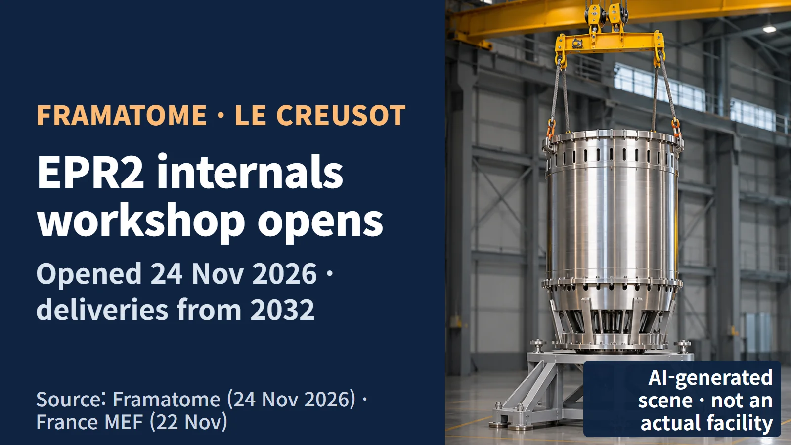
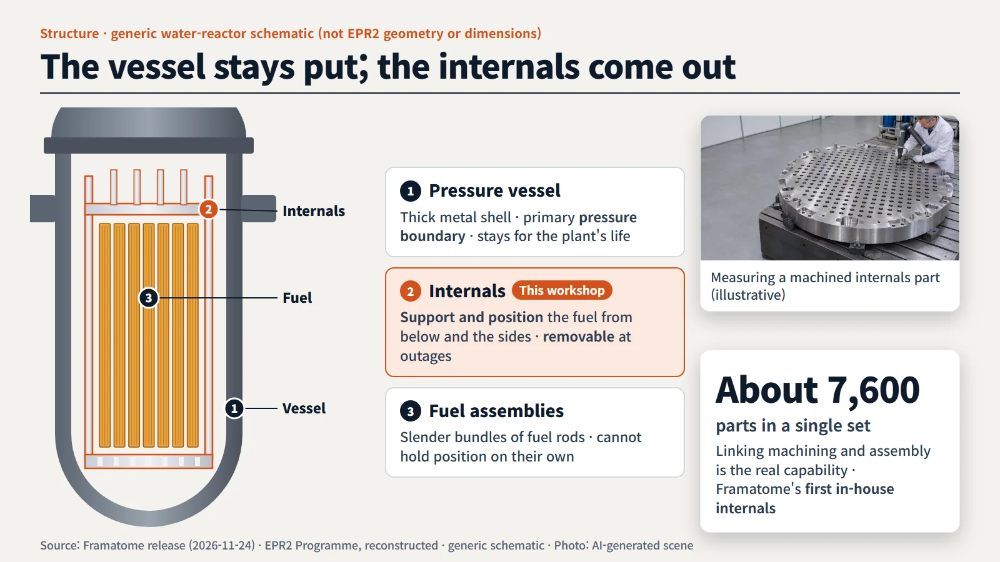
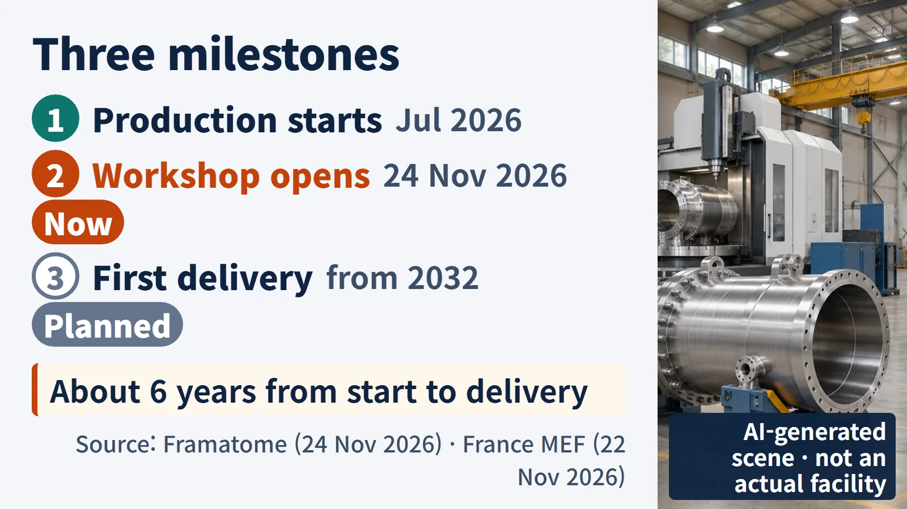

Large Reactors
EPR2 reactor-vessel internals: manufacturing, assembly and delivery preparations
Production start in July 2026, workshop opening on 24 November 2026, and first deliveries planned from 2032 — three separate milestones at Le Creusot
When people picture a new nuclear reactor, they usually see the dome and the cooling towers. The real heart of the reactor, however, is a tall metal basket that sits quietly inside a thick pressure vessel. On 24 November 2026, Framatome officially opened a dedicated workshop at Le Creusot in France that builds exactly that basket, known in the industry as reactor-vessel internals. Production had already started earlier in the year, in July 2026, and the company has indicated that first deliveries are planned from 2032. The three dates mean three different things, and together they show how a key piece of the EPR2 program is being prepared.

A dedicated workshop opens at Le Creusot
Framatome opened a dedicated workshop for reactor-vessel internals at Le Creusot, France, on 24 November 2026. France's Ministry of the Economy had announced in advance that the Industry Minister would visit the site and that the workshop was intended for EPR2 equipment, and on the day of the opening Framatome disclosed that production had already started and that first deliveries are planned for 2032. The French EPR2 program covers six new reactors, and this workshop is positioned as a dedicated feeder for one of the core components of those units.
A few figures put the scale in perspective. The investment is around 100 million euros, the usable area is about 15,000 square metres converted from existing industrial space, and the company reports roughly 50 new jobs. Large machining, welding and assembly equipment has been installed. Le Creusot has long been a heavy-nuclear manufacturing hub in France; a dedicated space inside it gives reactor-vessel internals their own production flow.
One nuance is worth holding on to right away. Framatome has stated that production began before the official opening, so the workshop was already machining parts for the six-unit EPR2 program when the ribbon was cut. The opening marks the formal completion of the facility's foundations as a separate milestone, with its own date and indicators. The same point returns when we look at the 2032 delivery date.
What the internals do inside a reactor vessel
The term "internals" may sound unfamiliar. Inside the reactor pressure vessel - the thick metal shell that contains the primary-circuit pressure - sits a mechanical structure that supports the fuel assemblies and keeps them in their intended positions. The pressure vessel is the outer wall; the internals are the dedicated cradle and skeleton that live inside it.
Three roles stand out. First, support and positioning. Fuel assemblies are slender bundles of fuel rods that cannot hold their intended position without support. The internals carry them from below and restrain them from the sides so that the fission reaction spreads across the core as the design intends. Second, removal for maintenance. During operation the internals stay fixed inside the vessel, but at scheduled outages for refuelling and inspection they are designed to be lifted out. The pressure vessel stays in place for the plant's life; the internals are a removable part. Third, precision assembly. A single set contains about 7,600 components, so the real capability of the workshop is how machining and assembly link up across all those parts.

The split between the pressure vessel and the internals also matters for safety. The pressure vessel forms the pressure boundary of the primary circuit and remains in service throughout the reactor's life. The internals hold the fuel in position while remaining accessible for inspection and maintenance. The two components follow separate production routes, and what Framatome announced in Le Creusot is the production base for the internals side. The company describes this workshop as the first time it manufactures reactor-vessel internals in-house, meaning that work previously distributed across partners is now consolidated.
The figure of 7,600 parts also hints at the difficulty. Confirming that each individual part has been placed in the correct subassembly, and that the inspection records after machining and welding map to the final assembled condition, is what makes the work auditable. Detailed figures such as dimensional tolerances or welding acceptance criteria were not included in this announcement and would appear in later technical disclosures.
Production start, opening, and first deliveries: three different milestones
It is tempting to compress the news into a single headline, but the sequence has three distinct markers that should stay separate.

The first marker is July 2026, when production started for the six-unit French EPR2 program. From that point on, the workshop's equipment began machining real EPR2 parts. The second marker is 24 November 2026, when the dedicated workshop officially opened, and when the main indicators of the facility - investment, floor area and jobs - were disclosed. The third marker is from 2032, which is the year that Framatome has indicated for the start of first deliveries. This third date marks the planned start of deliveries.
Reading the three dates separately matters because each refers to a different kind of verifiable fact. July 2026 is an event that has already happened and is confirmed by the company's announcement. 24 November 2026 marks the formal completion of the workshop's foundations. 2032 is a forward-looking schedule, and unit-by-unit progress and actual deliveries are still to be disclosed in future updates. In practical terms, about six years separate the start of production from the planned start of first deliveries.
That six-year interval reflects how nuclear equipment manufacturing works. A single set of about 7,600 parts is machined, partially assembled, welded, inspected and then assembled again at several stages, and this cycle repeats across several reactor units. The workshop opening marks the stage at which this flow began running inside a dedicated space; the planned 2032 date marks when the first completed set is scheduled to leave the gate. Whether that flow runs stably over time will be visible in later unit-by-unit progress disclosures.
Why precision assembly and traceable records matter
The most important feature of the Le Creusot workshop is less its size and more the production flow it enables, in which each step can be traced. In nuclear work this is called traceability. Every machining, welding and assembly step is tied to a record showing which part was handled, when, under which conditions, by whom and with which inspection result. With roughly 7,600 parts in a single set, that record is the only reasonable way to go back and understand where any issue may have originated.
Framatome's description of this workshop as the company's first in-house production of reactor-vessel internals fits the same picture. Keeping design, machining, assembly, inspection and records inside one site prevents handoffs between separate organizations from breaking the chain of responsibility and data. That becomes an asset later when confirming unit-by-unit progress or tracing the history of any individual component.
The follow-up evidence that will tell us whether deliveries are truly on track rests on this traceability. Four indicators are worth watching in sequence: machining output across parts, inspection results from welding and assembly, the mapping between individual subassemblies and their records, and customer acceptance dates. Together they show the difference between a workshop that has started production and a workshop that is ready to deliver. Today, unit-by-unit progress figures and actual delivery results have not been disclosed. Between now and the planned 2032 first deliveries, interim indicators on manufacturing and inspection will be the clearest sign of real progress.
The moment a new reactor first generates electricity is the most visible scene in a nuclear project. Behind that moment are years of quiet assembly and recordkeeping. The opening of a dedicated internals workshop at Le Creusot signals that one of those quiet production flows is now standing on its own. As 2032 draws closer, news about the plant that builds the inside of the reactor should become almost as interesting as news about the reactor itself.